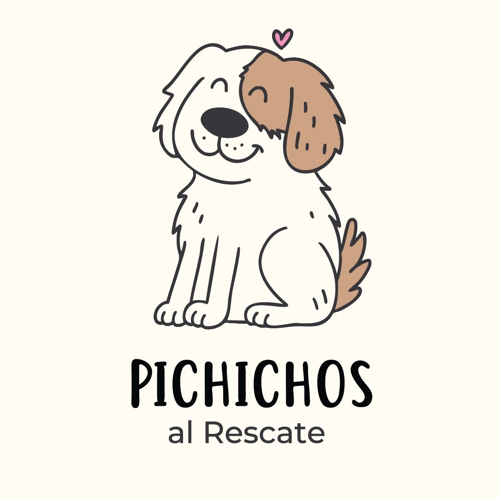

Propuesta · Experiencia digital
Una propuesta para conectar mejor la misión de la organización con las personas, empresas e instituciones que podrían sumarse.

El impacto existe. El trabajo existe. Pero cuando alguien llega por primera vez a los canales digitales, el recorrido suele terminar así:
Mientras tanto, la organización sigue necesitando:
El problema no suele ser falta de trabajo ni de contenido.
Dependiendo de los objetivos y prioridades de la organización, la propuesta puede incluir:
Cada visitante encontraría un recorrido más claro según lo que necesita:
Entiende el impacto concreto de su aporte antes de decidir.
Encuentra exactamente cómo sumarse, sin rodeos.
Puede solicitar una charla o actividad en pocos pasos.
Comprende cómo apoyar la misión con claridad y confianza.
La intención no es reemplazar lo que ya funciona.
La intención es ayudar a que lo que ya funciona acompañe mejor el crecimiento de la organización.
El valor de esta propuesta considera que Pichichos al Rescate es una organización sin fines de lucro, aplicando condiciones y tarifa preferencial para entidades de impacto social.
Antes de diseñar cualquier página, primero hay que comprender la organización: objetivos, públicos, formas de participación y capacidad operativa. Los hallazgos se comparten para validar juntos.
Se define qué necesita cada visitante para avanzar: qué información busca, qué preguntas tiene, qué acción queremos que tome. Cada propuesta se revisa antes de pasar a la siguiente etapa.
Recién entonces aparecen las herramientas: sitio web, landing pages, formularios y contenidos. El avance se comparte semanalmente para que siempre quede claro qué se hizo, qué sigue y qué se necesita.
Una experiencia digital nunca está terminada. Se observa, se ajusta y se optimiza en función de los resultados obtenidos.
Hola, soy Eliseo.
Ayudo a organizaciones a convertir interés en participación mediante experiencias digitales mejor pensadas.
Llegué a Pichichos al Rescate a través de una presentación sobre el trabajo que vienen realizando en La Cava y me llamó la atención la amplitud de iniciativas que impulsan: rescate, educación, castraciones, voluntariado y trabajo comunitario.
Al recorrer sus distintos materiales encontré una organización con mucho impacto, una comunidad comprometida y una misión muy clara.
Esta propuesta parte de una pregunta concreta:
¿Cómo puede la comunicación ayudar a que más personas descubran ese trabajo y encuentren una forma concreta de sumarse?
Mi enfoque combina análisis, diseño de experiencias digitales y desarrollo web, siempre priorizando la claridad, la simplicidad y los objetivos reales de cada organización.
No creo que una página web genere impacto por sí sola. Mi punto de partida son los objetivos de la organización; las herramientas digitales vienen después.
Las mejores soluciones aparecen cuando se entiende el contexto, los objetivos y las limitaciones de cada organización.
Las decisiones se validan y ajustan junto a las personas que conocen la realidad de la organización.
Prefiero soluciones simples que puedan mantenerse y generar resultados reales.
Durante todo el proyecto comparto avances, próximos pasos y necesidades para que cada decisión sea visible.
Qué pueden esperar: